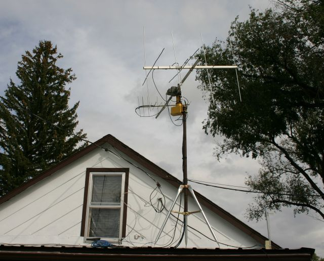
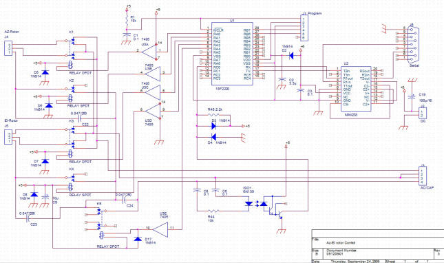
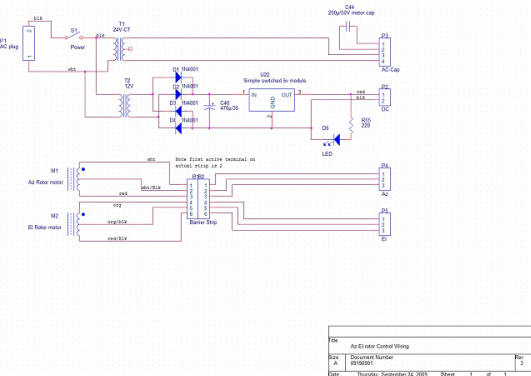
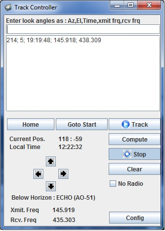

Amateur Satellite Antenna System #1
This year (2010) I decided to build a completely new amateur satellite antenna system. I started with a
conventional TV antenna rotator and an antique "Tenna" rotator. Both from eBay both < $100.
The Tenna is nice because it has a pass through for the antenna pole and a side mount making it a
perfect choice for the elevation rotor. Because of its age it required some reconditioning. Removing rusted,
broken bolts, new lube and some cleaning. Luckily both rotors work on similar voltages - about 18VAC.
Both use a standard 3 wire, 90 degree phase shit arrangement to control direction. The controller consists of a
18F2220 PIC processor, some relays, and a couple of chips for level shifting to drive the relays and the RS-232 port.
The software is in C and is available below. The zip file contains the entire MP Lab project.
The first iteration did not have the complete isolation between the digital portion and the motors. BIG MISTAKE.
Everything was fine in the shop, but on the metal roof a substantial potential exists between the motor housings and AC neutral.
When I first attached the unit to the radio computer I blew up part of the DC supply in the controller, the PIC chip
and destroyed the serial port on the computer. Lesson learned! If you build one use the same isolation or you may live to regret it!
Finally, in addition to the firmware there is a nice Java program which controls the controller and optionally, a FT-767 radio.
The java software is tailored for windows, but should work on Linux or Mac OS/X with little or no modification. It also
incorporates a DDE client for Orbitron - a popular satellite tracking package. Because of a peculiarity in the way Orbitron
is designed you have to "lie" to it and let it think it is interfacing a different program called MyDDE. When you tell orbitron to
connect it loads a "fake" executable for MyDDE (supplied) which immediately crashes - but that's ok it starts the DDE server
which is what we care about. Once linked up the Java software allow automatic tracking of the satellite as soon as its at least 3 degrees
above the horizon, and tracks down to 3 degrees, it will also adjust the radio frequency as need (about every 2,5 KHz change).
Instead of Obitron you can elect to put in a list of at least 3 look angles - Az., El., Time and optional xmit and rcv frequencies
at rise, set and midpoint of the pass. The software will interpolate positions and frequencies in between these that are adequate for most
passes, but not very accurate. The direct link to Orbitron works best, but of course, only on Windows.
|
 |
|
The antennas on the roof |
|
|
|
Inside the controller box |
|
 |
|
Controller schematic |
|
 |
|
Controller power supply and interconnection |

Here is a screen shot of the Java software while it is connected to Orbitron's DDE server. As you can see the satellite selected is below the horizon.

The rise time is 7 hours away, I have entered the rise time, angles and frequencies into the list to illustrate that function as well.
The rotor controller firmware is here : rotor_ctl.zip
The serial commands are very simple ASCII commands, they must be all caps all are terminated by either a line feed or carriage return:
P - show current position
Z - set current position to 0
Axxx - Azimuth in integer degrees (-360 to 360)
Exx - Elevation in integer degrees (-90 to 90)
Here is the Java software shown above including the entire Eclipse project to build it. If you just want to run it look in the distribution
directory, there you will find a .cmd file which starts it on most platforms.